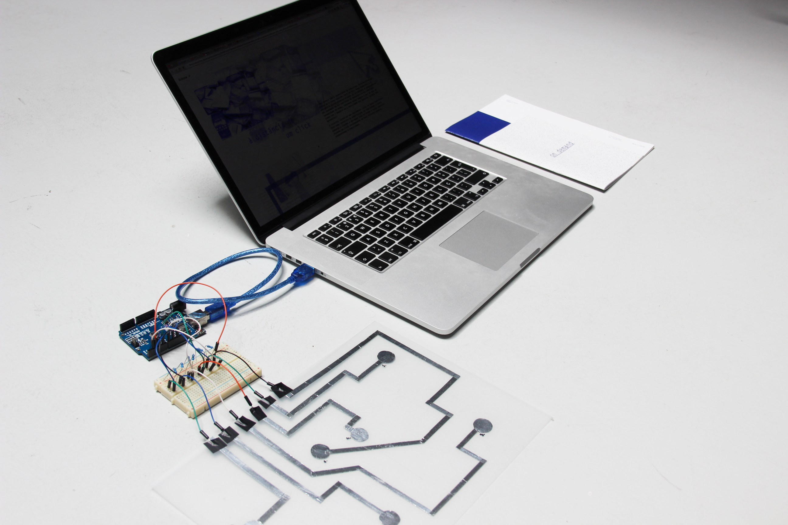
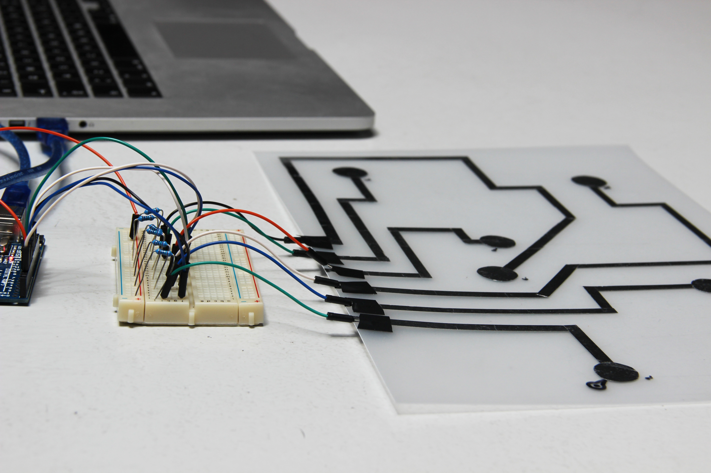
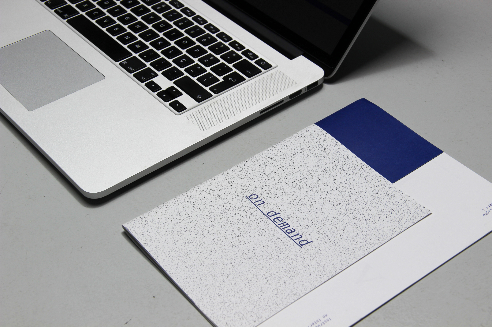
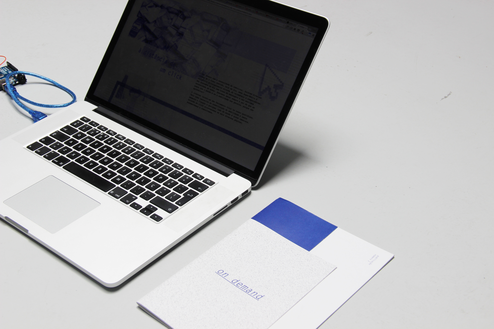
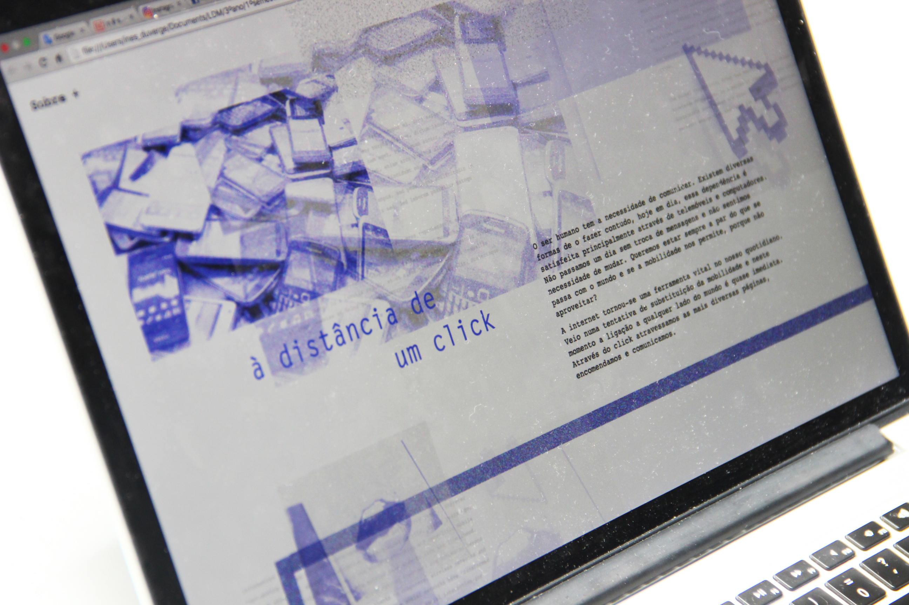
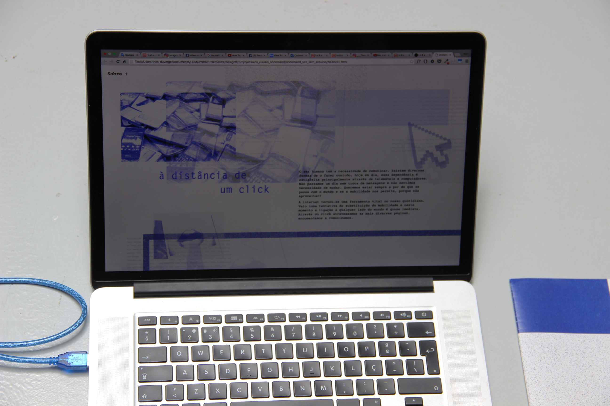

On demand
2016
Web | Editorial | Arduino
Academic project developed for the course of DesignIII. This is an hibryd publication that joins an editorial work with a technological aspect using Arduino. The content of this publication is based on on of the chapters of "In The Bubble – Designing in a Complexd” by John Thackara (2001) about mobility in a sustainable world.
Art Director: Inês Duvergé (me);
Programmer: Adriana Nunes;
Writter: Jéssica Parente.





